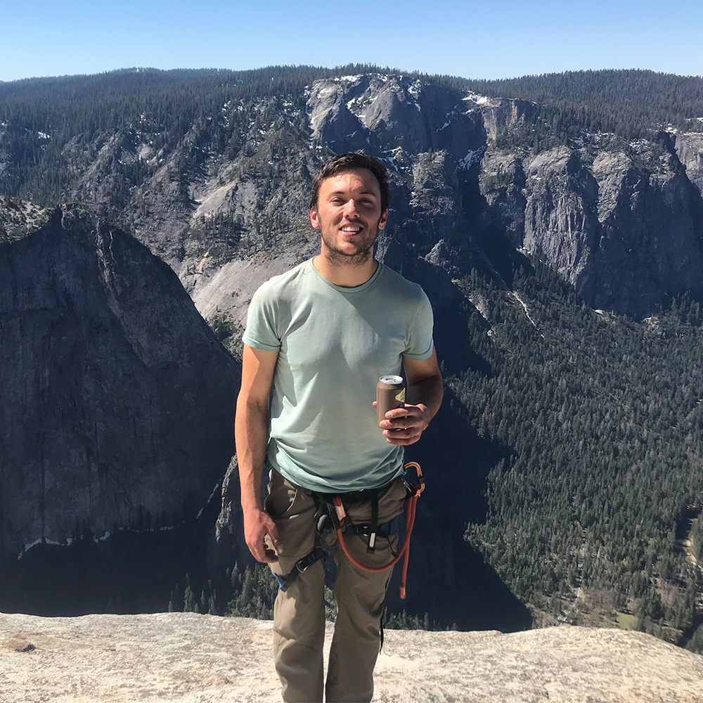
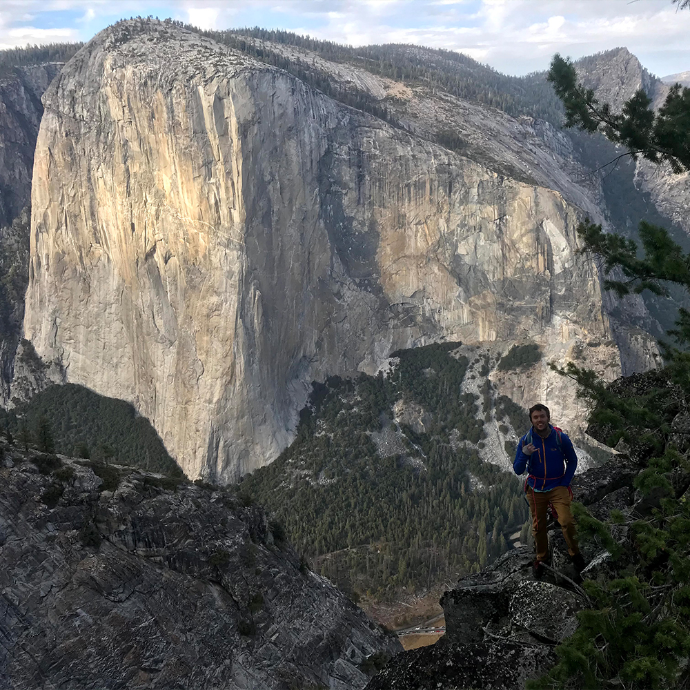

I am a 30 year old Software Engineer living in San Francisco California. For the past 10 years I have moved all over the city soaking in as much culture as I can. When I'm not working or coding, my passion in life is rock climbing. Specifically outdoor rock climbing in my favorite place on earth -- Yosemite Valley.
Yosemite has always been the pinnacle of rock climbing for me, the center of the universe if you will. I've always felt that if I could just prove myself there, I could be accepted anywhere. Subsequently I climbed the face of have dome 8 months after learning to climb outdoors, and climbed El Capitan twice in 2018 -- just two years after learning. I'm constantly trying to improve and find time to get outside and enjoy nature!
San Francisco, California
Phillip.Bay@gmail.com
https://twitter.com/phillipbay?lang=en
Caltrain - Locomotive Engineer
BNSF - Locomotive Engineer
| Climbing Log | ||
|
The Nose of El Capitan In A Day with Erik Griffith. Climbed on 05/30/2018 and took approximately 19 hours. Led 10, 11, 12, 13, 14, 15, 16(LHT), 17, 24, 25, 26, 27/28. Followed 1, 2, 3, 4, 5, 6, 7, 8, 9, 18, 19, 20, 21, 22, 23.
Yosemite Valley - El Capitan
|
||
|

The Salathe Wall of El Capitan with James Gustafson. Climbed on 04/24/2018. Led 7, 8, -/10, 11, 12, 13, 14, 18, 19, 20, 26, 27/28, 29, 30, 35. Followed 1-6, 15, 16, 17, 21/22, 23, 24/25, 31, 32, 33/34.
Yosemite Valley - El Capitan
|
||
|
Lost Arrow Chimney to Lost Arrow Spire with the Tyrolean Traverse with James Gustafson. Climbed on 08/01/2019. Led every pitch of LAT and for LAC Led 3/4, 9, 10. Followed 1/2, 5/6, 7/8.
Yosemite Valley - Lost Arrow Spire
|
||
|

The Northeast Buttress of Higher Cathedral Rock with Nick Buffini. Climbed on 08/13/2019. Led 1, 3, 4, 5, 6, 7. Followed 2. This is prpbably my favorite moderate multi-pitch in the valley. A bit of a sandbag, and a long apporach, but definitely worth it!
Yosemite Valley - Higher Cathedral Rock
|
||
|
Astroman on Washington Column. Climbed with Kevin Heinrich. CLIMBED ON 10/12/2018. Solo'd pitch 1. Led 2, 5/6, 7, 9/10.5. Followed 3, 4, 8, 10.5/11, 12. I would recommed a rack of singles of .1-#4 and doubles of .3 and .4 and triples of .2. .5-3 nuts.
Yosemite Valley - Washington Column
|
||
|
Darkstar at Temple Crag with Nick Buffini. Climbed on 08/22/2020. This was a nightmare of a climb, with loose rock and horrendous placements. Never have I thought I was going to meet my maker more than on this climb. Dropped my helmet on pitch 4 of 16.
Temple Crag - Dark Star
|
||